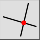
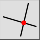
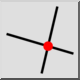
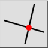

Przecięcie
Pasek narzędziowy / ikona:
 

Menu: Przyciąganie > Przecięcie
Skrót: S, I
Polecenia: snapintersection | si
Jest to tłumaczenie automatyczne.
Pasek narzędziowy / ikona:
 

Menu: Przyciąganie > Przecięcie
Skrót: S, I
Polecenia: snapintersection | si
Zatrzaskuje się do punktów przecięcia między jednostkami.